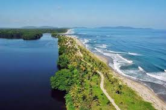

Cocobila es una comunidad situada en el municipio de Brus Laguna, dentro del
departamento de Gracias a Dios, en la región de la Mosquitia, Honduras. Es un lugar
conocido por su belleza natural, su cultura única y su biodiversidad.

Es un lugar muy amigable, hay muchos animales, se pasa tiempo entre amigos
jugando cuando hay momentos de recreacion en la cual se socializa mucho
normalmente se da cuando es de futbol tambien: la parte del nombre que dice
"Coco" es por que en esa zona abunda los palos de coco y se hace venta de estos
ya sea solo el agua o la parte comestible que traen por dentro la cual ellos
reconocen como "carne de coco".
Queda en Honduras, CentroAmerica en Gracias a Dios